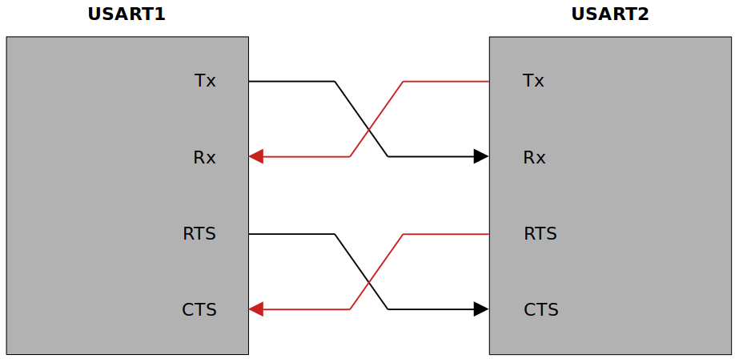
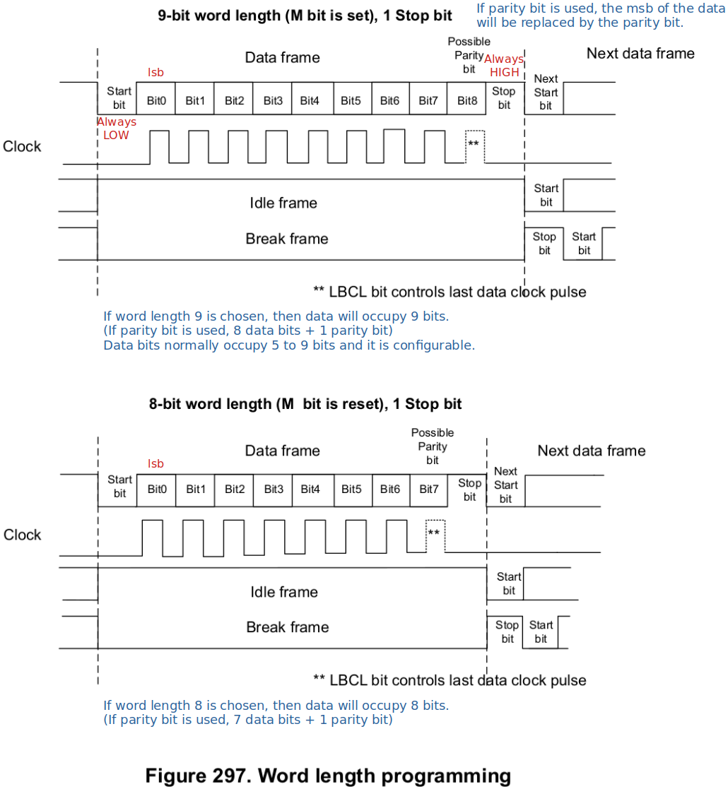
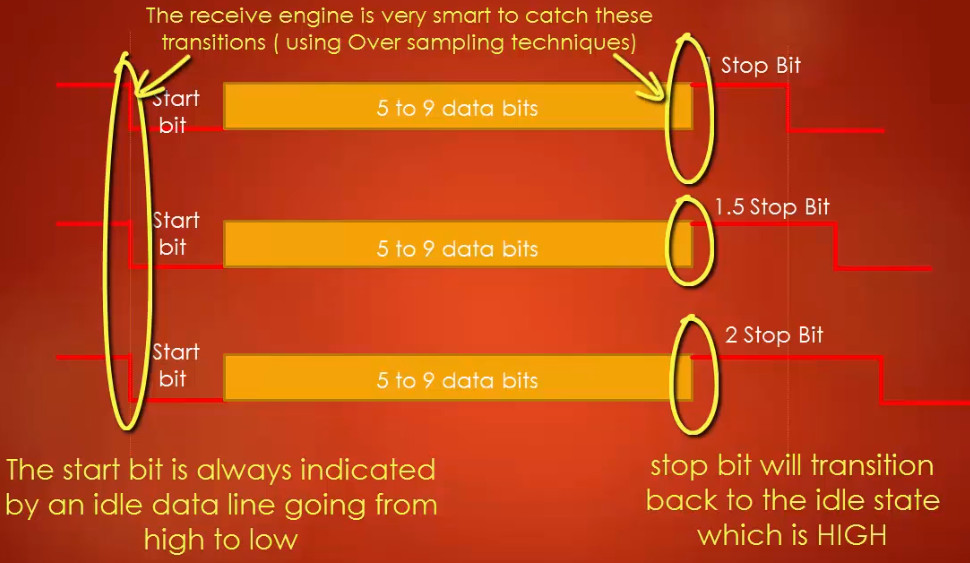
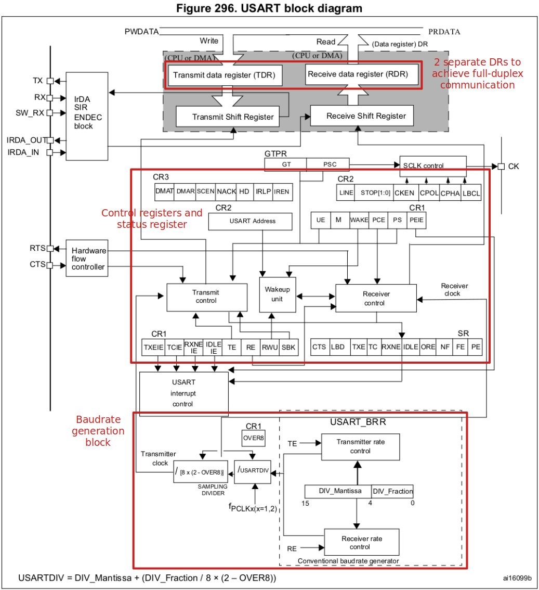
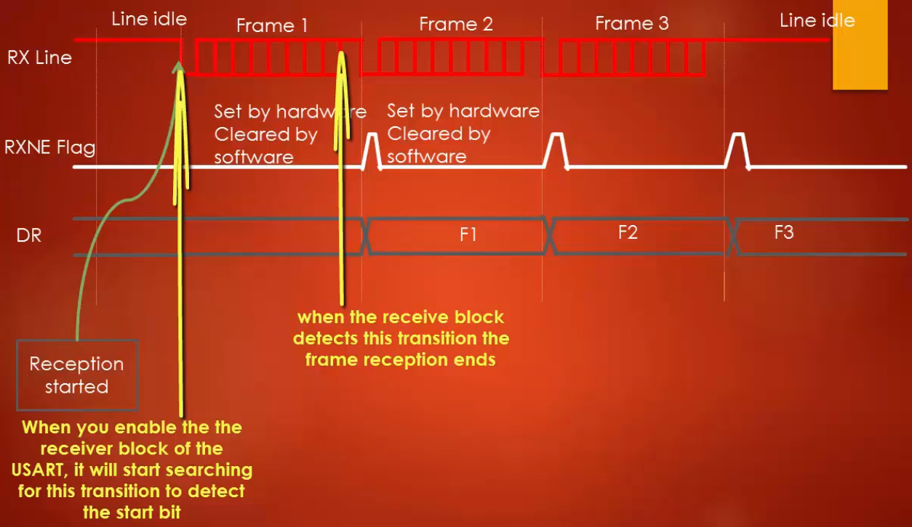
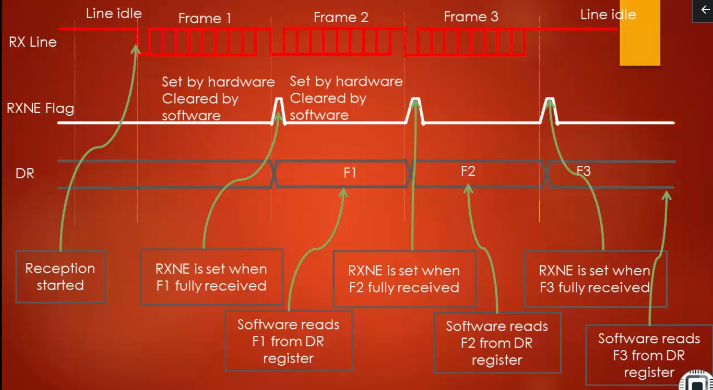

Home > Notebook > MCU Peripheral Drivers > Introduction to USART/UART
USART - Universal Synchronous Asynchronous Receiver Transmitter
UART - Universal Asynchronous Receiver Transmitter
In general, MCUs come with USART module instead of UART so you can use both the synchronous and asynchronous modes according to your project's needs.
There's no specific port for USART communication. USARTs are commonly used in conjugation with the protocols like RS-232, RS-434, USB, etc.
In synchronous transmission, the clock is sent separately from the data stream and no START/STOP bits are used.

USART bidirectional communication requires at least 2 pins; Tx and Rx.
Tx pin
Rx pin
USART uses RTS and CTS pins for hardware flow control.
Clear To Send (CTS) pin
Request To Send (RTS) pin
When USART1 module wants to receive data from USART2 module:
USART supports full-duplex communication.

The term baudrate refers to how fast the data is sent over a serial line.
Baudrate is usually expressed in units of bits-per-second (bps).
By inverting the baudrate, one can find out how long it takes to transmit a single bit. This value determines how long the transmitter holds a serial line HIGH or LOW.
e.g., If the baudrate is 9600 bps, then 1 bit duration is 1/9600 = 104 µs.
Both the trasmitter device and the receiver device must operate at the same baudrate.
Most common baudrates for USART communication where speed is not a critical factor: 9600 bps
Other standard baudrates that are typically used:
The greater the baudrate, the faster the data will be transmitted/received. However, there is a limitation of course.
The baudrates usually depend on the peripheral clock frequency of the USART peripheral.
USART uses START and STOP bits to synchronize communication:
START bit marks the beginning of a frame. (Always 1 start bit)
STOP bit(s) mark(s) the end of a frame. (Configurable; 1, 1.5 or 2 bits)

Adding a parity bit is a simplest method of error detection.
Parity is refers to the number of ones that appear in the binary representation of a number.
e.g., 55(10)
Two variants of parity bits
Even parity bit
Odd parity bit
In a nutshell, even parity bit results in even number of 1s whereas odd parity bit results in odd number of 1s when counted including the parity bit.

The heart of the transmitter is the Transmit Shift Register where parallel data is converted to serial data.
The Transmit Shift Register obtains its data from the Transmit Data Register (TDR).
The Tranmit Data Register (TDR) is loaded by the software.
Steps to setup USART transmission:
Program the M bit in USART_CR1 to define the word length (8-bit or 9-bit).
Program the number of STOP bit(s) in USART_CR2 register.
Select the desired baudrate using the USART_BRR register.
Set the TE bit in USART_CR1 to enable the transmit block.
Enable the USART by writing the UE (USART Enable) bit in USART_CR1 to 1.
If the TxE flag is set, write the data byte to send to USART_DR.
Repeat Step 6 for each data to be transmitted.
After writing the very last dat into USAR_DR, wait until TC (Transmission Complete) flag is set. This indicates that the transmission of the last frame is complete.
Remember if software wants to disable USART or UART peripheral, it has to do it after TC bit is set.
During a USART reception, the data shifts in least significant bit (lsb) first through the Rx pin to the Receive Data Register (RDR) via the Receive Shift Register.
The heart of the USART receiver is the Receive Shift Register where the serial data is converted to parallel data.
After sampling the Rx pin for the STOP bit, the received data bits in the Receive Shift Register are transferred to the Received Data Register (RDR).
Steps to setup USART reception:
Program the M bit in USART_CR1 to define the word length (8-bit or 9-bit).
Program the number of STOP bit(s) in USART_CR2 register.
Select the desired baudrate using the USART_BRR register.
Enable the USART by writing the UE (USART Enable) bit in USART_CR1 to 1.
Set the RE flag in USART_CR1, which enables the receiver block of the USART peripheral.
When a character is received, wait till the RxNE flag is set and read the data byte from the data register.
The RxNE flag must be cleared by reading the data register before the end of the reception of the next character to avoid an overrun error.

